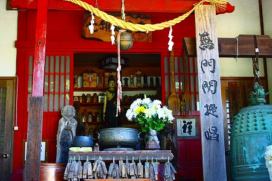
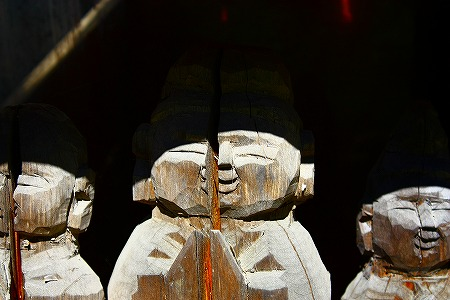

盛岡市の郊外にある
松園観音。

前回訪れた際にはあまりの仏像の密度にただただ圧倒されてしまった。
詳しくは
前回の訪問記を読んでくだされ。
ところが後日、読者の方から松園観音はそれだけではない、というご指摘を受け再び盛岡に馳せ参じた次第なのである。
以前訪れた場所から遥かに離れた場所に松園観音の山門はあった。
門の脇にはこれでもかっ！と言うくらい
マンガチックな不動明王が立っていた。
目が…
門を潜り、山の中をしばらく歩いていくと墓地が見えてきた。
後に知る事になるが前回訪れた仏像みっしり堂のすぐ裏手にあたる。
その一画にあった赤い建物。護摩堂とあった。
お堂の正面以外は棚になっており、ここにも
独特の木彫りの仏像が密集していた。
ほぼ同じ形状の味わい深過ぎるフォルム。
顔のど真ん中にバックシ割れ目が入っている仏像だって満面の笑顔。
えっ…笑顔…

堂内にはメッセージが書かれた仏像もちらほら。
深い、深いぞ。
それにしてもこの作者は何を急いでいたのだろう？
信仰の対象なんだからもう少しちゃあんと作れば良いのに…と今更ながら物凄くまっとうな感想を持ったりもするが、まあ、面白いからいいのである。

地獄コソ我ガ望ムトコロ
…はい！俺もです！
ところでこの
松園観音最大のポイントを前回訪問時に完全に見落としていたことをお詫びしつつ、改めて紹介しよう。
墓地の一画、斜面に沿う形で
巨大なお地蔵さんが鎮座しているのだ。
見ようによっては熊本の
大釈迦坐像に見えなくもないが、 どうも様子がおかしい。
近づいてみると…
ぎょぎょぎょっ！
何と
身体が石塔で出来てました！
恐らく無縁墓を寄せ集めたものなのだろうがボディの一個一個が墓、というのは凄すぎるぞ！
何だか合体ロボみたいで、このまま空に飛んでいきそうな勢いだった。
…というわけで松園観音を訪問した際はこちらの石塔地蔵も忘れずに、ね。